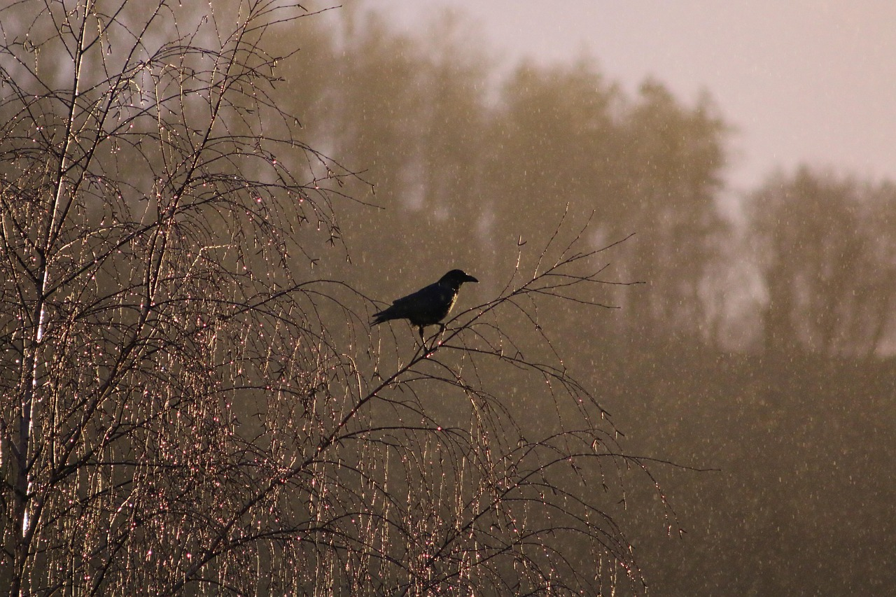

Alfred and Spike
Alfred, Spike, and a house, Planned to grow trees together. Spike went on planting the seedlings, Alfred watered, nurtured, pruned, Did everything the trees necessitated.
Sprout — Spike didn’t show up, Alfred looked confused.
Seedlings — Spike didn’t show up, Alfred pondered for the answer.
Sapling — Spike didn’t show up, Tears stained Alfred’s cheeks.
Mature tree — Happy Alfred, Spike finally showed up, So did the neighborhood. Spike, persuasive with words, Admired the elegant flowers and appetizing fruits. Gratified with admiration, Shared silver hugs, Gained recognition.
Ancient trees — Disappointed.
Snag with cavities — Infuriated Spike, So was the neighborhood, They blamed Alfred, Disheartened trees.
Obligated mature trees — Altruistic Alfred, Heedless Spike.